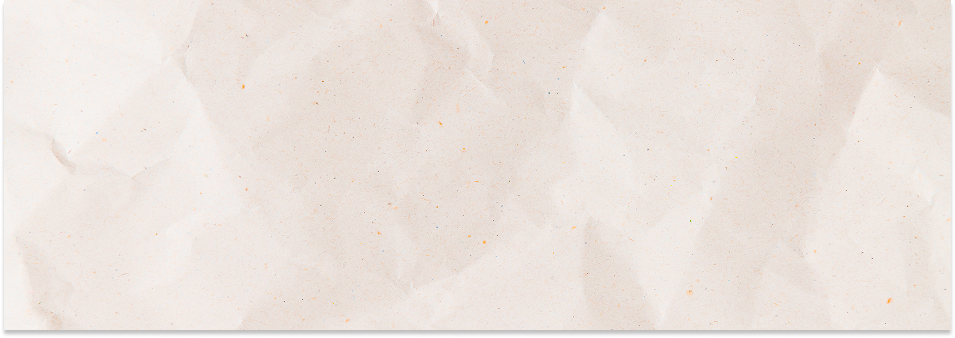
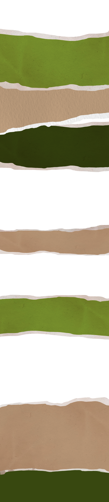
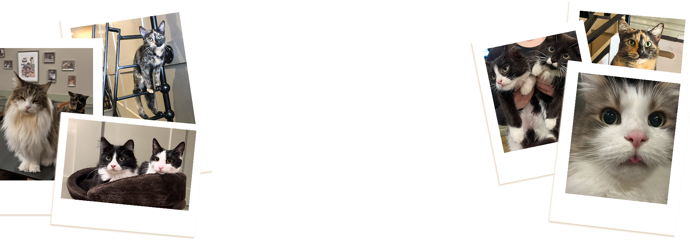
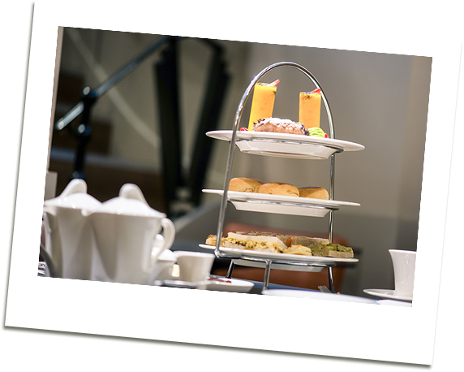
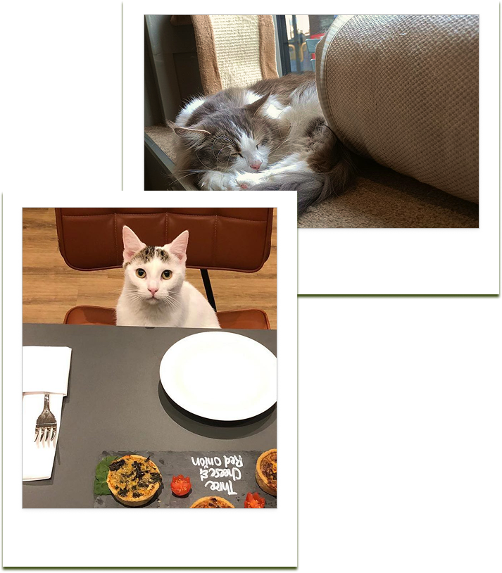
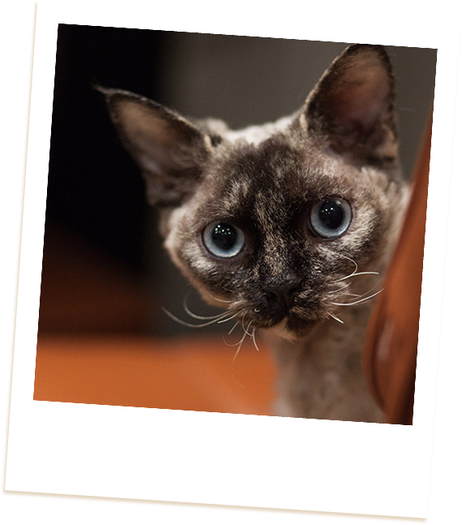
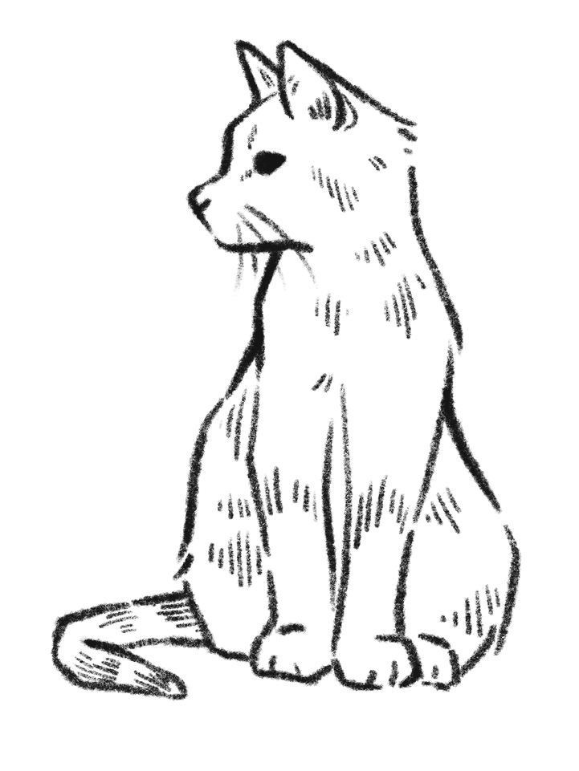
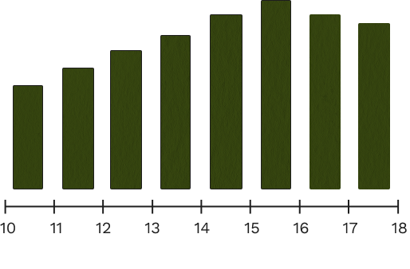
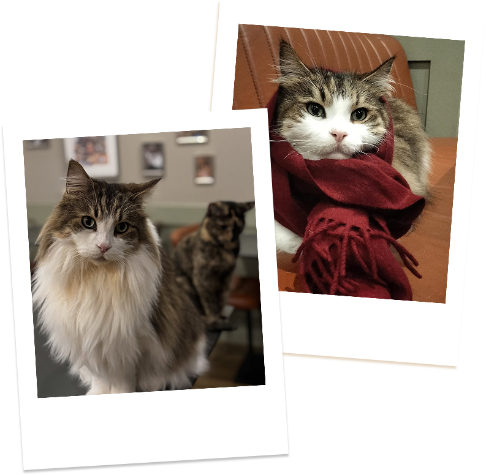

Whiskers & Cream is London’s most upmarket cat café, offering a serene escape from the city bustle. Located in North London, the café blends elegant décor, soft lighting, and cozy seating with the charming presence of its ten resident cats, making every visit a relaxing and memorable experience.
Average £10-20 per person
Admission & Drink
Adult Peak £18.00, Off Peak £15.00 | (Under 11 - Child) Peak £15.00 Off Peak £12.00
Includes admission and either an artisan coffee, award-winning tea, one of our speciality hot chocolates or a soft drink.


Whether you’re catching up with friends, enjoying a date, or simply in need of a quiet moment, Whiskers & Cream provides the perfect environment. Guests can sip artisan coffee, speciality tea, or hot chocolate, indulge in cakes, pastries, or a bespoke afternoon tea, and share the space with cats who love to wander, nap, and occasionally demand a cuddle.
Monday - Friday
Wednesday
Saturday - Sunday
10:00 – 17:00
Closed
10:00 – 17:30

Popular hours

Most crowded on weekends.
It’s is possible to book an Off Peak Session when it is available (these are also cheaper).
Fun fact: Each cat has a distinct personality, so no two visits are ever the same.
We offer many option for people who are:

Car parking in the area is free on some roads after 2pm with limited parking meters available before 2pm. Please check local roads for extended free parking at weekends.
Whiskers & Cream
593 Holloway Road
London N19 4DJ
Best to book in advance (on occasion they are able to accommodate last minute bookings and walk-ins, but this cannot be guaranteed)
0207 263 2888